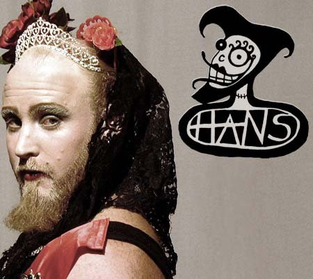

| En Stille Aften Med dunst | 12. Februar 2005 |
 |
|
| ARRANGEMENT stille aften med dunst - queer jazz kabaret DATO lørdag d. 12 februar 2005 TIDSPUNKT 21:00 - 05:00 show start kl. 22:00 PRIS 50,- kr. STED Ungdomshuset Jagtvej 69 2200 København K TEKST Efter en række hæsblæsende arrangementer med queer electro djs, elektro punk bands, hel nats total shows og personligheds konkurrence trækker dunst stikket ud og inviterer til en stille aften med et akustisk aftenprogram. Selvom der skrues ned for volumen, bliver det absolut ikke kedeligt. dunst har gennem sine shows i udlandet spredt tentaklerne og fundet søstre og brødre, som synes at kunne lide duften i bageriet. Denne gang får dunst besøg af selveste Prinsesse Hans fra New Zeland (foto), der vil give en times show med kabaret stykker og akustiske rock sange i sin helt egen royale fortolkning: Lieder, akustisk punk rock, behårede bryskasser, diademer og viktorianske kjoler i en forrygende blanding. Derudover bydes der på kabaret, spoken word, jazz, djs og performance shows ved dunst egen performance gruppe, som nu også tæller flere lesbiske medlemmer bla. vinderen af HR&FRU dunst "Lene Leth Lebbe" og drag king gruppen "Kink Stars". "En stille aften med dunst" er et støtte arrangement for at bevare ungdomshuset som levende scene for alternativ kultur og livsstil. INFO http://dunst.dk http://ungdomshuset.dk |
|